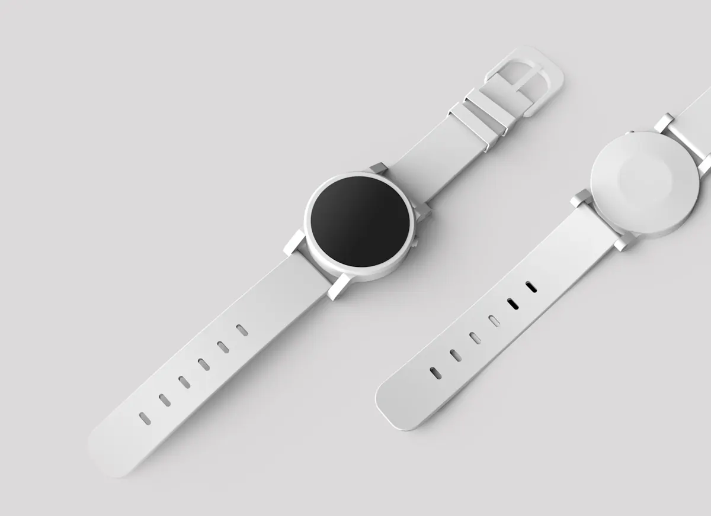
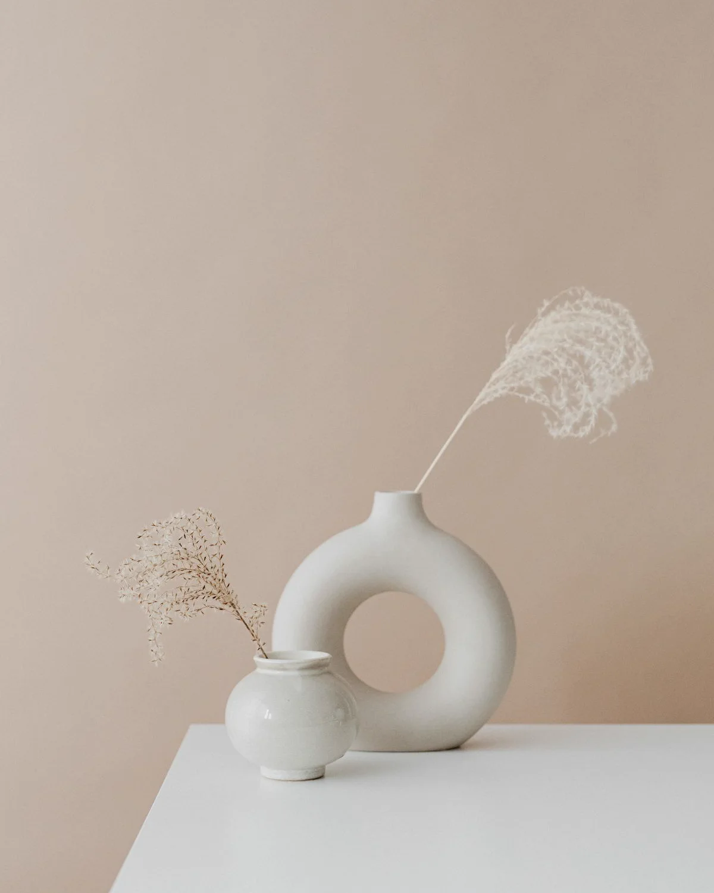

Projekt koncept / 05
Form & FieldKoncept dyqani online
Dyqan i menduar mirë për sende të përditshme, ku shfletimi ndihet po aq i prekshëm sa vetë sendet.

Form & Field / Koncepti 0501 / Përmbledhje
Një raft i vogël,
i zgjedhur me kujdes.
Një dyqan online nuk ka nevojë për zgjedhje pa fund. I duhet një qëndrim dhe guximi për t’u ndalur te numri i duhur i produkteve.
Form & Field është dyqan i trilluar për sende që bëhen për t’u përdorur: orë, enë dhe vegla të qeta për rutinën e përditshme. Koncepti preferon një koleksion të vogël e të zgjedhur, jo zgjedhje pa fund.
Ngjyrat e ngrohta të letrës dhe fotot e produkteve mbi sfonde të buta i japin dyqanit ndjesi njerëzore. Rruga deri te blerja është qëllimisht e shkurtër: koleksioni, produkti, shporta. Shënimet editoriale japin kontekst pa penguar. Rezultati është dyqan që ndihet i kuruar, jo thjesht i mbushur.
Qëllimi i dizajnit
Shkronjat serif i japin dyqanit zërin, ndërsa shkronjat sans të thjeshta e mbajnë informacionin e produktit të lexueshëm. Hapësirat dhe kufijtë e gjerë krijojnë ndjesinë e një rafti të vërtetë. Në telefon qetësia ruhet me një produkt në fokus për çdo ekran.
Raft i zgjedhur
Një koleksion i vogël prezantohet me siguri, në vend të listave pa fund.
Ngrohtësi materialesh
Ngjyrat e argjilës, lirit dhe letrës e bëjnë dyqanin online të ndihet i prekshëm.
Qartësi te pagesa
Produkti, çmimi dhe veprimi janë të qartë në çdo hap.
02 / Pamja në ekrane
Një ide, e njëjtë
në çdo ekran.
Faqosja është menduar si një sistem i vetëm, jo si faqe kompjuteri e ngjeshur në telefon. Rendi, ritmi dhe karakteri ruhen nga ekrani i gjerë deri te 390 piksel.


03 / Gjuha vizuale
Argjilë, letër
dhe pyll.
Ngjyra të marra nga vetë sendet: argjilë e paglazuar, letër e palosur dhe e gjelbër e thellë pylli.
Objects for daily rituals.
Të gjitha shkronjat ruhen në këtë faqe dhe përdoren njësoj në koncept dhe në faqe.
04 / Detajet
Sende, të kornizuara
me kujdes.
Fotot e produkteve përdorin sfonde të buta, hije natyrale dhe një pikë fokusi, duke i dhënë çdo sendi të njëjtën vëmendje të qetë.

Fotot janë ilustruese dhe përdoren sipas licencës përkatëse. Asnjë foto nuk paraqet punë për klient.
Fillo një projekt